4. CPSF（サイバー・フィジカル・セキュリティ対策フレームワーク）参考資料
想定読者および全体構成
CPSFの想定読者は、Society5.0という新たな社会において、セキュリティ担当者やサプライチェーンに関わる担当者になります。CPSFは、必要な見直しを迅速かつ柔軟に行うことを視野に入れた構成とするため、全体を以下のような三部構成とし、A~Eまでの5つの添付資料で成り立っています。添付資料A、Bは第Ⅱ部、添付資料Cは第Ⅲ部、添付資料D、Eは全体に対する参考資料という位置付けとなります。
添付資料
添付 A ユースケース
添付 B リスク源と対策要件の対応関係
添付 C 対策要件に応じたセキュリティ対策例
添付 D 海外の主要規格との対応関係
添付 E 用語集
第Ⅰ部[コンセプト]
サイバーセキュリティの観点からリスク源を整理するためのモデル（3層構造と6つの構成要素）を提示
※テキストの「7-4-1. CPSF（サイバー・フィジカル・セキュリティ対策フレームワーク）の概要」で説明しています。
第Ⅱ部[ポリシー]
第Ⅰ部で示したモデルを活用したリスク源を整理するとともに、リスク源に対応する対策要件を提示
第Ⅲ部[メソッド]
第Ⅱ部で示した対策要件を対策の種類に応じて整理
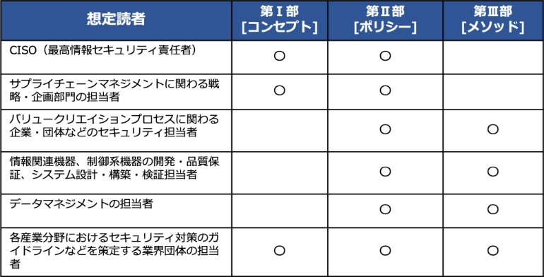（出典） 経済産業省「サイバー・フィジカル・セキュリティ対策フレームワークVer.1.0の概要」を基に作成
CPSFを活用することで期待される効果
- セキュリティ対策の実行によるバリュークリエイションプロセスの信頼性確保
- 製品・サービスのセキュリティ品質を差別化要因（価値）にまで高めることによる競争力の強化
第Ⅰ部[コンセプト]
コンセプトの詳細につきましては、テキストの「7-4-1. CPSF（サイバー・フィジカル・セキュリティ対策フレームワーク）の概要」で説明しています。第Ⅰ部[コンセプト]については、テキストの補足として、6つの構成要素について説明します。
6つの構成要素
CPSFでは、バリュークリエイションプロセスが動的に柔軟に構成されることから、資産を固定的に捉えることが難しく、構成要素について一定の抽象化を行って捉えることが必要となります。セキュリティ対策を講じる上で最適な最小単位として、6つの構成要素が定義されています。
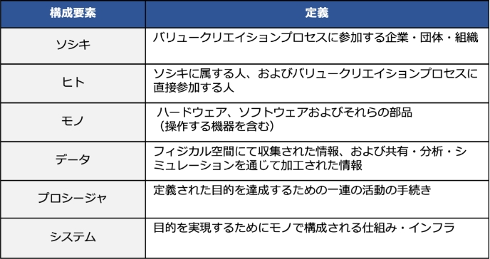（出典） 経済産業省「サイバー・フィジカル・セキュリティ対策フレームワークVer.1.0」を基に作成
第Ⅱ部[ポリシー]
3層構造モデルと6つの構成要素を活用したリスクマネジメント
リスクマネジメントにおける標準的なプロセス（例：JIS Q 31000:2010、 JIS Q 27001:2014）も踏まえ、CPSFに基づくセキュリティリスクマネジメントの流れを整理します。 3層構造モデル、6つの構成要素の考え方を活用し、バリュークリエイションプロセスの特徴を捉えたセキュリティリスクマネジメントが可能になります。
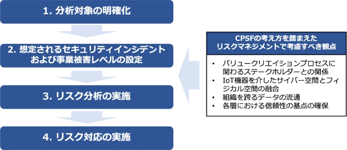1. 分析対象の明確化（3層構造モデルへの落とし込み）
各層の特性および機能・役割を理解した上で分析範囲および資産を整理します。
分析対象のシステムによっては第2層の機能と第3層の機能を併せ持つ内容もあります。
（出典） 経済産業省「サイバー・フィジカル・セキュリティ対策フレームワークVer.1.0の概要」を基に作成
2．想定されるセキュリティインシデントおよび事業被害レベルの設定
各層の機能に対する悪影響のイメージ
3層構造モデルにおける各層の特性などを踏まえ、各層の機能（守るべきもの）とそれに対する悪影響のイメージを整理します。
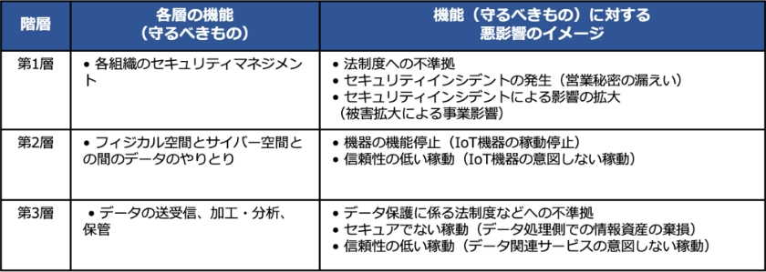（出典） 経済産業省「サイバー・フィジカル・セキュリティ対策フレームワークVer.1.0の概要」を基に作成
想定されるセキュリティインシデントの設定
各層の機能および機能に対する悪影響の観点を踏まえ、3層構造の各層で発生を回避すべき一般的なセキュリティインシデントを整理します。
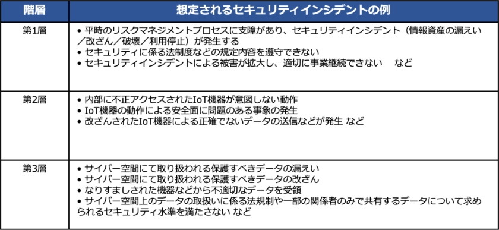（出典） 経済産業省「サイバー・フィジカル・セキュリティ対策フレームワークVer.1.0の概要」を基に作成
3．リスク分析・リスク対応の実施（添付Bの活用）
想定されるセキュリティインシデントおよび事業被害レベルの設定にて実施した内容を踏まえ、添付Bでは、抽出したセキュリティインシデントに対して、当該インシデントの発生を助長、あるいは発生したインシデントの被害を拡大させる可能性がある脅威および典型的な脆弱性を整理します。脆弱性を6つの構成要素で捉えることで、バリュークリエイションプロセスにおけるリスク源の洗い出しが可能となります。また、リスク分析を実施する際に、検討するリスク源の抽出および過不足のチェックなどに活用できます。添付Bでは、対応するセキュリティ対策要件が整理されており、リスク対応として回避、低減、移転、保有のうち、低減を実施する場合は、これらを参照することで対策要件の選択が可能になります。
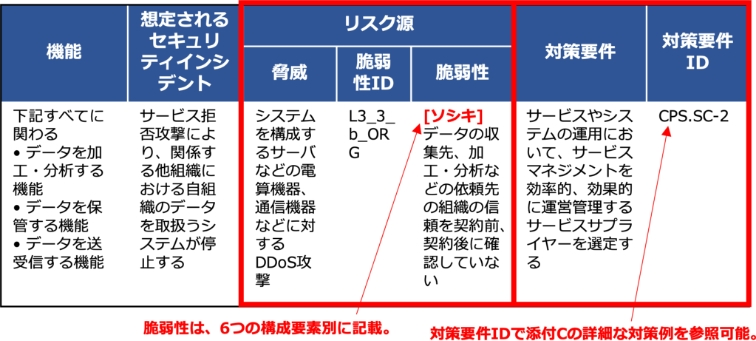（出典） 経済産業省「サイバー・フィジカル・セキュリティ対策フレームワークVer.1.0の概要」を基に作成
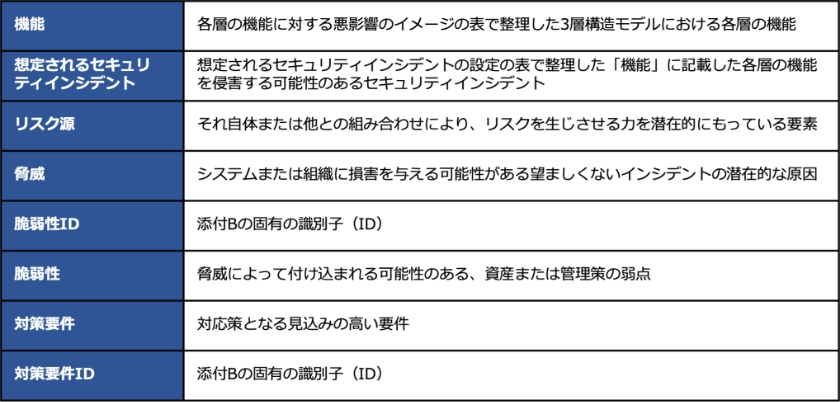第Ⅲ部[メソッド]
4．対策要件および対策例集を活用したリスク対応
添付Cでは、添付Bで示した対策要件に対して、CSFを参考にカテゴリ分けを行い整理します。各対策要件に対して、具体的な対策例を記載します。
リスクアセスメントの結果に応じて、第Ⅲ部に記載された対策要件および、添付Cに記載されたセキュリティ対策例を実装し、リスクマネジメントプロセスを適切に実施することで、自組織のセキュリティマネジメントが改善されます。
（出典） 経済産業省「サイバー・フィジカル・セキュリティ対策フレームワークVer.1.0の概要」を基に作成
CPSFにおける他の国際規格などとの対応関係
第Ⅲ部、添付Cおよび添付Dにおいて、主要な国際規格などとの対応関係を記載します。
またCFS、NIST SP800-171、ISO/IEC 27001付属書Aについては、各規格などから見た場合の対応関係を整理します。
＜添付C＞ CPSF → 他の国際規格など
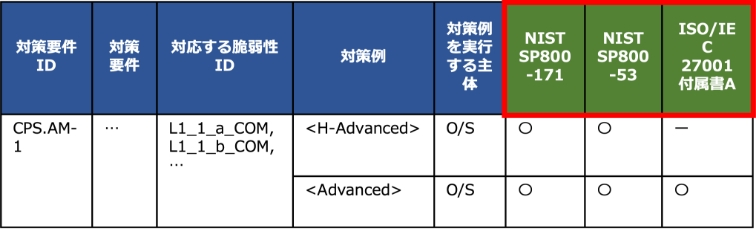＜添付D＞他の国際規格など → CPSF
NIST Cybersecurity Framework v1.1のサブカテゴリ → CPSF
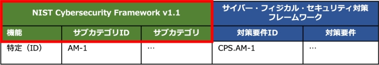NIST SP 800-171の要求事項 → CPSF
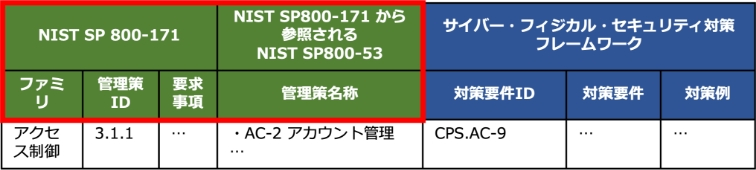ISO/IEC 27001の管理策群 → CPSF
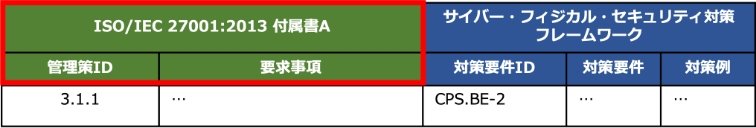（出典） 経済産業省「サイバー・フィジカル・セキュリティ対策フレームワークVer.1.0の概要」を基に作成
対策要件のカテゴリとNIST Cybersecurity Framework との対応関係
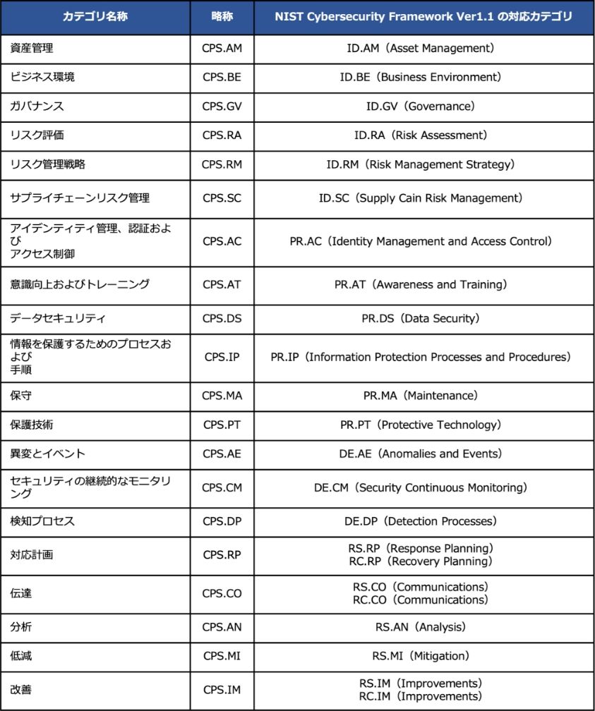（出典） 経済産業省「サイバー・フィジカル・セキュリティ対策フレームワークVer.1.0」を基に作成